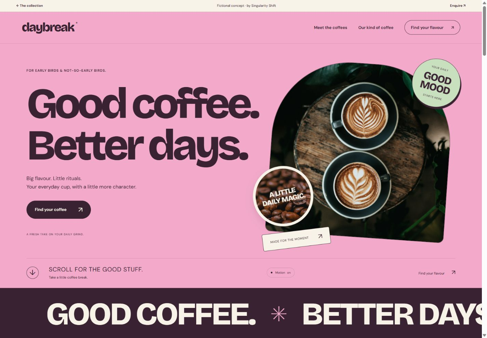

A product finder turns a few customer preferences into a useful starting recommendation. It can help when the differences between products make sense to your team but are difficult for a first-time visitor to interpret.
The opportunity is especially clear for an independent shop or specialist business with a considered range. Imagine a Cheltenham retailer whose staff regularly ask the same two questions before suggesting a product. Those conversations can provide a much stronger starting point than adding a long quiz because other websites have one.

See the idea in action
DAYBREAK
Explore layered coffee imagery, a flavour finder and a personal tasting list.
Original concepts for fictional brands, created by Singularity Shift.
Collect the questions you already ask
Start by writing down the questions that change your recommendation. Separate those from questions that are interesting but have little effect on the result.
For example, how someone intends to use an object may change the appropriate model. A preferred colour might narrow the choice later. Asking about a person's occupation may do neither.
Keep the first version focused on the smallest set of useful distinctions. Each extra question should earn its place by making the result more relevant. Give people an understandable answer when they are unsure, rather than forcing them to select a preference they do not have.
Use the language customers use in conversation. Internal product categories may be convenient for your stock system while being unfamiliar to everyone else.
See how DAYBREAK makes a simple recommendation
The DAYBREAK coffee concept uses two groups of choices: flavour preference and brewing method. It is a fictional coffee brand built to demonstrate a working website experience.
The flavour selection chooses between three demonstration coffees. The brewing selection changes the explanation so that the recommendation relates to an espresso or moka routine, or to filter and cafetière brewing. Visitors can save coffees to a tasting list during their current visit.
This is a small set of explicit rules. The result follows the visitor's selections and can be explained. The concept has no checkout, stock connection or customer account, and the tasting list should not be mistaken for a placed order.
The useful lesson is the relationship between the question, the result and its explanation. A real shop would supply its own product knowledge and approve the recommendation rules.
Write the rules before designing the quiz
Prepare a plain-language list of how answers affect the products shown. Decide which answers are essential requirements and which are preferences.
A hypothetical outdoor-products finder might first exclude items unsuitable for the intended activity, then rank the remaining choices by carrying size. That distinction prevents an attractive preference from overriding a more important requirement.
Agree what happens when:
- Two products fit equally well.
- No product meets the stated requirements.
- A recommended product becomes unavailable.
- A visitor changes an earlier answer.
- Someone wants to see the whole range instead.
A result such as "These two options fit; here is the difference" can be more useful than pretending there is one perfect match. An honest no-match result should explain the next step, such as adjusting a preference or asking the team.
Explain the recommendation in the result
Show the product name, an appropriate image and the main reason it was suggested. Refer to the answers that actually influenced it.
For example, a hypothetical result could say that a compact model suits the visitor's storage constraint, while a larger alternative offers another feature they mentioned. The explanation should come from approved product information.
Make it easy to review the answers and change one. Do not make customers restart the entire process to compare a nearby option. A short result summary can also be useful when someone contacts the business for more advice.
Keep the normal product pages and catalogue available. A finder is an additional route through the range; some returning customers already know what they need.
Make the questions comfortable to use
Each question needs a clear label, an obvious selected state and controls that work with a keyboard. Related choices should be grouped meaningfully. MDN's fieldset documentation explains the native HTML grouping and caption mechanism available for this purpose.
Review the result on a phone. Check that changing an answer does not unexpectedly move the visitor away from their place, and that a result update can be understood without relying on colour or animation.
A short finder usually does not need contact details before revealing its answer. If your business has a reason to collect an enquiry, explain that step and ask only for information the team will use.
Give someone responsibility for keeping it accurate
A finder becomes part of the catalogue, so decide who maintains it. New products, discontinued ranges and changed recommendations should have a clear update process.
Ask for a readable record of the rules and a small set of example answer combinations with expected results. These examples help your team check changes without having to understand the implementation.
Before commissioning the work, agree how you will assess usefulness. That could include observing customers complete a task, reviewing questions sent to staff, or measuring which recommendations lead to product-page visits. Choose measures appropriate to the business rather than assuming a quiz will improve sales.
The ecommerce planning guide covers the wider shop requirements. If customers need to assemble a product rather than find one, the configurator guide addresses that different task.
For website design and development in Cheltenham, send James a few products and the questions you use to recommend them. That is enough to start shaping a useful finder.